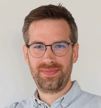

Freelance Full Stack Developer · Software Architect · DevOps Engineer
I’m a freelance software developer based in Izegem, Belgium, with 12+ years of experience creating reliable digital products for a wide range of business needs. I work across full-stack development, backend systems, databases, architecture, and automation to help teams build and scale applications with confidence.
My work combines practical engineering with scalable design and maintainable delivery:
Across the years, I have built and modernized software for business-critical workflows, data-heavy systems, and customer-facing applications.